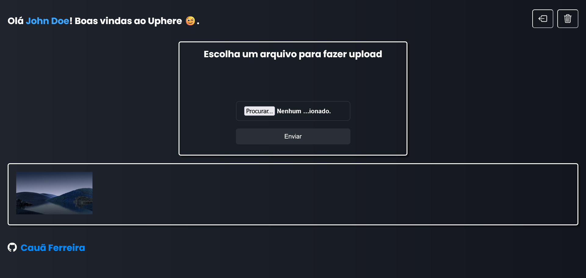
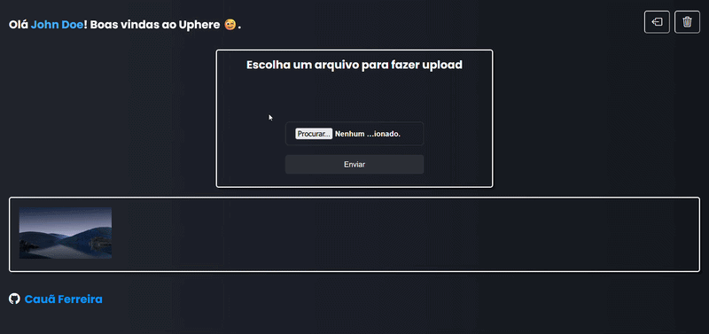

Imagens do projeto
Sobre o projeto:
Autenticação de usuários e gerenciamento de arquivos. Possui suporte aos seguintes tipos de arquivos: imagens, vídeos ou documentos de texto. Permite excluir tanto o arquivo como a conta criada. O MongoDB Atlas foi responsável por armazenar dados da conta do usuário, enquanto o Supabase Storage armazenava os arquivos dos usuários.
Tecnologias utilizadas:
Back-end
NodeJS, API REST, MongoDB Atlas, Mongoose, validação de dados e armazenamento de arquivos em nuvem com Supabase.
Segurança
Hash de senhas, tokens JWT e variáveis de ambiente.
Front-end e outros
React, styled-components, javascript e git.